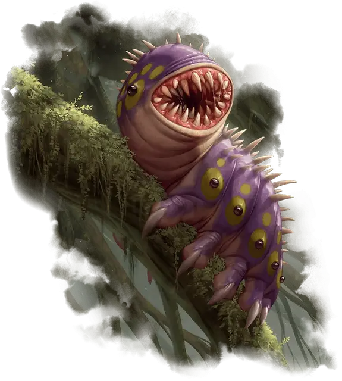

Талисман–вредитель
Pest Mascot
Крошечный Монстр, без мировоззрения

Класс Доспеха 13 (природный доспех)
Хиты 22 (4к4 + 12)
Скорость 30 футов
| мод | спас | ||
|---|---|---|---|
| СИЛ | 11 | +0 | +0 |
| ЛОВ | 14 | +2 | +2 |
| ТЕЛ | 17 | +3 | +3 |
| мод | спас | ||
|---|---|---|---|
| ИНТ | 5 | −3 | −3 |
| МДР | 13 | +1 | +1 |
| ХАР | 4 | −3 | −3 |
Навыки Восприятие +3
Чувства тёмное зрение 60 футов, пассивное Восприятие 13
Опасность 1/4 (50 опыта)
Бонус мастерства +2
Особенности
Регенерация. Вредитель восстанавливает 5 хитов в начале своего хода, если в начале его хода у него есть хотя бы 1 хит. Если он получает урон огнём эта черта не работает в начале следующего хода вредителя.
Шипастая шкура. В начале каждого своего хода вредитель причиняет 2 (1к4 ) колющего урон всем схватившим его существам или существу, которое он держите в захвате.
Действия
Укус. Рукопашная атака оружием: +4 к попаданию, досягаемость 5 футов, одна цель. Попадание: Колющий урон 4 (1к4 + 2).
Описание
Чтобы творить волшебство, магам Визерблума необходима жизненная эссенция, и существа, которые чаще всего идут в употребление, называются просто «вредителями». Вредители — довольно назойливые, напоминающие саламандр животные, которые легко перерабатываются в магическую силу для заклинаний Визерблума. Большинство магов за пределами факультета считает вредителей ужасными созданиями: это строптивые, колючие, шипящие бестии, которые не поддаются дрессировке и кусают без предупреждения. Но маги Визеблума нередко таскают вредителей с собой, словно обожаемых питомцев — питомцев, которые одновременно являются удобными источниками жизненной силы.